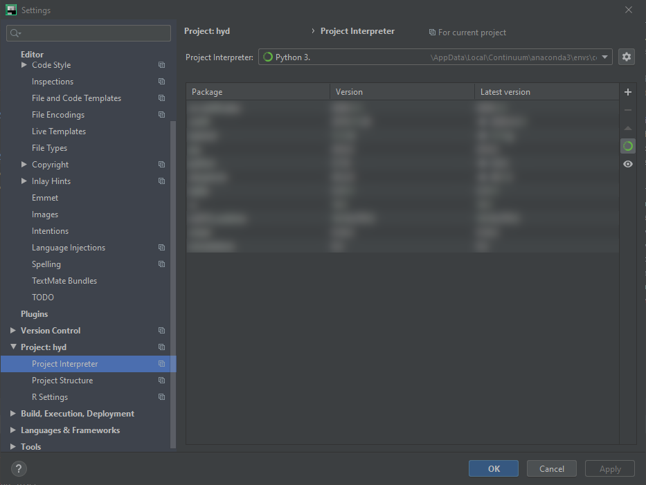

Install Python¶
Python’s two-fold development (Python2 and Python3) and other parallel versions of Python (e.g., ESRI’s ArcGIS or Nvidia’s cuda Python versions) may cause that multiple versions of Python are installed on your computer (even though Python2 is about to disappear). As a consequence packages might have been unintentionally or unknowingly installed for another Python than used for a project. However, the parallel existence of multiple Python interpreters that may access packages may be beneficial (e.g., when packages are installed that are not compatible with each other). So, how to deal with the challenge of having multiple Python interpreters (or environments) installed?
Conda environments are one solution to this challenge: A Conda Environment is a directory on your computer that represents a virtual environment with a particular Python interpreter (e.g., a Python2 or Python3 executable) and packages. The directory is typically named env (or venv for virtual environment) and Anaconda will control automatically where the environment directories (folders) are stored on your computer. On Windows, the typical directory is C:\users\<your-user-name>\AppData\Local\Continuum\anaconda3\envs\. Note that AppData is a hidden folder (view hidden folders on Windows). Only change the default directory for Conda Environment directories, if you exactly know what you are doing.
Requirements
Before you continue, make sure that Anaconda or Miniconda is installed according to the descriptions in the Get Started section.
Conda Environments¶
Create and Install¶
To create a new conda environment, open Anaconda Prompt and type (replace ENV-NAME for example with hypy):
conda create --name ENV-NAME python=3.8
An alternative (and recommended for the tutorials on this page) option is to install an environment that suites most of the needs for codes and analyses shown on these pages through an environment (YML) file:
Download the environment file here (if needed: copy the file contents of
environment.ymlin a local text editor tool such as Notedpad++ (alternatives and save the file for example in a directory called C:/temp/).Open Anaconda Prompt (
Windowskey > typeAnaconda Prompt> hitEnter).Navigate to the download directory where
environment.ymlis located (usecdto navigate for example to C:/temp/).Enter
conda env create -f environment.yml(this creates an environment calledhypy).
Tip
The provided environment.yml file creates a carefree environment for using Python as described on this website. Still, you may want to create your own environment and use this section refresh your mind for installing any missing libraries.
Activate Environment¶
The active environment corresponds to the environment that you are working in (e.g., for installing libraries or using Jupyter). To activate the above-created hypy environment:
Open Anaconda Prompt (
Windowskey or click on the start menu of your operating system > typeAnaconda Prompt> hitEnter).Activate the hypy environment with
conda activate hypy
Install Additional Python Packages¶
To install more *Python* packages:
Activate the environment where you want to install, remove, or modify packages (e.g.,
conda activate hypy- see above).Install a package by typing
conda install PACKAGE_NAME(if the package cannot be found, tryconda install -c conda-forge PACKAGE_NAME).
Alternatively, press the Windows key (or click on the start menu of your operating system) > type Anaconda Navigator > got to the Environments tab > select the hypy environment (or create another environment) > install > install packages.
Remove (Delete) Environment¶
To remove a conda environment open Anaconda Prompt and type:
conda env remove --name ENVIRONMENT-TO-REMOVE
For example, to remove the hypy environment type:
conda env remove --name hypy
There are many more conda commands and the most important ones are summarized in the developer’s conda cheat sheet.
Setup Interfaces and IDEs¶
To follow the course content and run code cells, it is recommended to use JupyterLab. To create projects, develop programs, or simply to complete course assignments, it is recommended to use an Integrated Development Environment (IDE) such as PyCharm.
JupyterLab¶
The descriptions on the Get started for installing and launching JupyterLab, where Jupyter notebooks (.ipynb files), Python scripts (.py files), folders and more can be created from the File menu.
Tip
Start JupyterLab by typing jupyter lab in Anaconda Prompt.
The Kernel menu runs the defined programming language (Python 3 in the example below). The Settings menu provides options to configure styles (e.g., choose the JupyterLab Dark theme shown in the below figure).
JupyterLab runs on a local server (typically on localhost:XXPORTXX/lab), which is why it is just like an interactive website in your browser. At the beginning it takes some getting used to, but one gets quickly familiar with it and there are many advantages such as the inline use of online graphics.

Fig. 2 JupyterLab in Dark theme appearance with a Jupyter notebook (xml.ipynb) opened showing the combination of a markdown cell (Charts(plots) and a Python 3 cell.¶
Jupyter is a spin-off of IPython, which is “a rich architecture for interactive computing”. Therefore, when we start a Python kernel in JupyterLab, an IPython kernel is started, which refers to the currently activated conda environment. So if you need to install a package for usage in JupyterLab, follow the above instructions and make sure that the corresponding environment is activated.
Python cells in Jupyter notebooks often require certain packages, which must be reloaded for each cell after each kernel start (learn more about packages in the Packages, Modules and Libraries section). So it can be useful to define default imports for IPython and this works as follows.
Look for the (hidden)
.ipythonfolder on your computerIn Windows, this ist typically in your user folder (
C:\Users\your-name\.ipython\) (how to show hidden files in WindowsIn Linux (or other Unix-based system such as macOS), files beginning with a
.are hidden and IPython is typically located in/usr/local/etc/ipython/or/usr/local/etc/.ipython/(either use the terminal and typels -aor simultaneously hit theCTRL+Hkeys)
In the
.ipythonoripythonfolder, create a sub-directory called/profile_default/startup/(if not yet present).If not yet present: Create the directory
.../ipython/profile_default/startup/, with a Python file calledipython_config.py.Open
ipython_config.py(right-click > edit - do not run the file) and add default import packages.For the Python (basics) course it is recommended to define the following default imports in
ipython_config.py(add modifications, then save and close the file):
import os
import sys
import numpy as np
import pandas as pd
import matplotlib as plt
import tkinter as tk
from tkinter import ttk
For the geospatial Python section, consider to add (read gdal installation instructions first):
import gdal
from gdal import ogr
from gdal import osr
Note
The default_profile is part of the default Jupyter installation and it is normally not necessary to create it manually. The IPython docs provide more detail about custom settings and modifying profiles on any platform.
PyCharm¶
After the successful installation of PyCharm within Anaconda, use the just created conda environment as interpreter. The following steps guide through the setup of PyCharm for using conda environments.
Launch PyCharm and create a new project.

:alt: pyc-prj” max-width=”500px
Create a new project in PyCharm.
1. Define The new `hypy` environment as *Pure Python* project interpreter:
* Select *New environment using `Conda`
* In the *Location* box select the new `hypy` environment
* Click *Create* to create the new project.
```{figure} ../img/pyc-prj-setup.png
:alt: pyc-prj-setup
Setup the hypy conda environment for the new project.
Verify that the project interpreter is correctly defined:
Click on PyCharm’s
Filemenu and selectSettings...In the Settings window go to
Project: [NAME]>Project InterpreterMake sure that the above-created
hypyconda environment is defined as Project Interpreter.

:alt: pyc-prj-interp
Verify the correct setup of the Project Interpreter.
```{tip}
**Are you struggling with setting up *PyCharm* correctly?** *PyCharm* and *Anaconda* are designed for working hand-in-hand and the developers provide an [up-to-date documentation](https://docs.anaconda.com/anaconda/user-guide/tasks/pycharm/) for setting up *PyCharm* to work with *conda* environments.